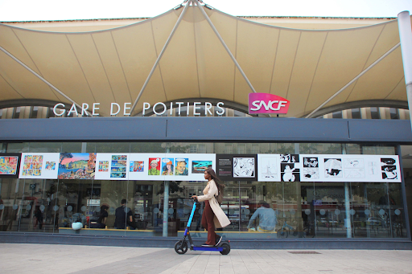
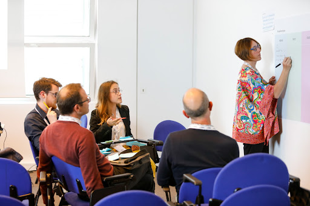

La transition écologique est aujourd’hui au cœur des préoccupations mondiales. Face aux défis environnementaux qui se posent, les territoires doivent s’engager activement dans la transition écologique. En France, le Schéma Régional d’Aménagement, de Développement Durable et d’Égalité des Territoires (SRADDET) constitue un instrument essentiel pour orienter les politiques territoriales régionales. Au niveau local, les EPCI disposent du programme Territoire Engagé Transition Écologique pour accélérer leur démarche de transition écologique.

Le SRADDET, un outil de développement régional vers la transition énergétique
Le Schéma Régional d’Aménagement, de Développement Durable et d’Égalité des Territoires (SRADDET) est un document stratégique qui vise à définir la politique d’aménagement et de développement durable au niveau régional. Il constitue un outil essentiel pour orienter les politiques territoriales en faveur de la transition écologique.
Le SRADDET est élaboré par le Conseil régional, en concertation avec les acteurs locaux, les partenaires institutionnels et la société civile. Il couvre un large éventail de thématiques liées à l’aménagement du territoire, à l’habitat, à la préservation de l’environnement, au développement économique, à la mobilité, à l’énergie, au climat, à la biodiversité, à la prévention et la gestion des déchets, …

L’objectif principal de ce schéma est de fixer des orientations stratégiques en matière d’aménagement et de développement durable, en prenant en compte les spécificités et les enjeux propres à chaque région. Il s’agit d’adopter une approche globale et cohérente des politiques territoriales, en intégrant les dimensions économiques, environnementales, sociales et culturelles.
Pour élaborer ce document, une démarche participative est généralement mise en place. Cela implique la consultation et l’implication des acteurs locaux, tels que les collectivités territoriales, les associations, les entreprises, les citoyens, les experts, et les autres parties prenantes concernées. La concertation permet de recueillir différentes perspectives, d’identifier les besoins spécifiques du territoire et de favoriser l’appropriation des enjeux par l’ensemble des parties prenantes.
Il repose sur plusieurs principes fondamentaux. Tout d’abord, il encourage la concertation et la participation citoyenne, en associant les acteurs locaux et la société civile à son élaboration. Cela permet de prendre en compte les attentes et les besoins des populations concernées, ainsi que les connaissances et l’expertise locale.

En outre, le SRADDET favorise la prise en compte des spécificités territoriales. Chaque région a ses particularités en termes de géographie, de contexte économique, de ressources naturelles, de patrimoine, etc. Ce document reconnaît ces spécificités et vise à adapter les politiques en conséquence, en tenant compte des réalités locales et des potentiels de développement propres à chaque territoire (Lire par exemple le document de référence de la région Bretagne).
Enfin, le SRADDET promeut la transversalité des politiques publiques. Il encourage la collaboration entre les différents acteurs, qu’ils soient issus du domaine de l’environnement, de l’économie, de la santé, de l’éducation, de la culture, etc. Il favorise ainsi les synergies entre les différentes thématiques abordées, pour une approche intégrée et cohérente de la transition écologique.
Bref, il constitue un outil clé pour orienter les politiques territoriales en faveur de la transition écologique. Il fixe les orientations stratégiques en matière d’aménagement et de développement durable, en tenant compte des spécificités régionales et en favorisant la concertation et la transversalité des politiques. Le SRADDET est un élément central du cadre réglementaire et des politiques de développement durable en France. Il s’impose notamment à d’autres documents de planification : les Plans Climat Air Énergie ( PCAET), les Schémas de Cohérence Territoriale ( SCoT),…
Quels objectifs pour le SRADDET ?
Le schéma régional a pour objectif de fixer des orientations stratégiques en matière d’aménagement et de développement durable, en prenant en compte les spécificités et les enjeux propres à chaque région.

Il vise à favoriser une approche globale et cohérente des politiques territoriales, en intégrant les dimensions économiques, environnementales, sociales et culturelles. Le SRADDET vise également à promouvoir la transition écologique en encourageant l’adoption de pratiques durables dans les différents secteurs d’activité.
Les objectifs du SRADDET sont multiples et couvrent un large éventail de thématiques liées à la transition écologique et au développement territorial. Voici quelques-uns des objectifs typiques qui peuvent être intégrés dans un SRADDET :
- Transition écologique et climatique : l’objectif est de favoriser la transition vers une économie plus verte et résiliente, en réduisant les émissions de gaz à effet de serre, en promouvant les énergies renouvelables, en améliorant l’efficacité énergétique, en adaptant les territoires aux changements climatiques, et en encourageant des modes de production et de consommation durables.
- Préservation de la biodiversité : Le schéma régional peut fixer des objectifs spécifiques pour la préservation et la valorisation de la biodiversité régionale. Cela peut impliquer la protection des espaces naturels, la préservation des corridors écologiques, la restauration des écosystèmes dégradés, la conservation des espèces menacées, et la promotion de pratiques agricoles respectueuses de l’environnement.
- Aménagement du territoire équilibré : cet outil peut chercher à favoriser un aménagement équilibré et cohérent du territoire, en encourageant la mixité des fonctions urbaines et rurales, en luttant contre l’étalement urbain, en favorisant la rénovation des quartiers et des centres-villes, en préservant les espaces naturels et agricoles, et en promouvant une mobilité durable. Cela peut encourager l’objectif Zéro Artificialisation Nette (ZAN).
- Gestion durable des ressources : on retrouve ici des objectifs visant à optimiser l’utilisation des ressources naturelles, à réduire les déchets, à favoriser l’économie circulaire, et à promouvoir une gestion durable de l’eau, des sols, des forêts, et d’autres ressources essentielles à la région.
- Équité territoriale : favoriser une égalité des territoires en assurant un accès équitable aux services publics, aux infrastructures, aux équipements culturels, aux transports, à l’éducation, à la santé, et à d’autres services essentiels. Cet outil peut également chercher à réduire les écarts de développement entre les différentes zones géographiques de la région.
- Participation citoyenne : Le SRADDET peut encourager la participation des citoyens, des acteurs locaux et de la société civile dans l’élaboration et la mise en œuvre des politiques territoriales. Il peut favoriser la concertation, la transparence, l’information et la consultation des parties prenantes, afin de garantir une prise de décision collective et une meilleure appropriation des enjeux environnementaux.
Ces objectifs illustrent la diversité des enjeux abordés par un SRADDET. Ces objectifs peuvent évidemment varier d’une région à l’autre en fonction des spécificités territoriales et des besoins locaux. Cela offre un cadre stratégique pour guider l’action publique en faveur du développement durable et de la transition écologique au niveau régional.
Les principes du SRADDET illustrés
Le SRADDET repose sur plusieurs principes fondamentaux. Tout d’abord, il encourage la concertation et la participation citoyenne, en associant les acteurs locaux et la société civile à son élaboration. Il favorise également la prise en compte des spécificités territoriales, en reconnaissant les particularités de chaque région et en adaptant les politiques en conséquence. De plus, le SRADDET promeut la transversalité des politiques publiques, en encourageant la collaboration entre les différents acteurs et en favorisant les synergies entre les différentes thématiques abordées.
Des exemples :
- Promotion des énergies renouvelables : développement des énergies renouvelables, tels que l’éolien, le solaire, l’hydroélectricité, la biomasse, etc. Il peut prévoir la création de parcs éoliens ou solaires, l’encouragement à l’autoconsommation d’énergie renouvelable, l’installation de panneaux solaires sur les bâtiments publics, la promotion de la méthanisation agricole, etc. La région Grand Est, par exemple, s’est fixée comme objectif de devenir une région à énergie positive et bas carbone à l’horizon 2050;
- Plan de mobilité durable : Le SRADDET peut inclure des mesures visant à favoriser une mobilité plus durable. Cela peut impliquer la promotion des transports en commun, le développement de réseaux de pistes cyclables, la mise en place de bornes de recharge pour les véhicules électriques, la limitation de l’usage de la voiture individuelle, la création de zones piétonnes, etc.
La région Occitanie prévoit un désenclavement physique de certains de ses territoires par l’extension du réseau de transports en commun Lio. La région Bretagne, elle, vise un meilleur raccordement de la région au reste du monde avec notamment la restructuration de l’offre ferroviaire lancée depuis 2017.

- Préservation de la biodiversité : Le SRADDET peut définir des actions spécifiques pour la préservation de la biodiversité. Cela peut inclure la création de réserves naturelles, la protection des espèces menacées, la restauration des écosystèmes dégradés, la mise en place de corridors écologiques, la sensibilisation à la richesse et à la fragilité de la biodiversité locale, etc.
- Plan de gestion des déchets : Le SRADDET peut prévoir des mesures pour réduire la production de déchets et favoriser leur gestion durable. Cela peut impliquer le développement du tri sélectif, la promotion du compostage domestique, la mise en place de centres de tri performants, la sensibilisation à la réduction des déchets, l’encouragement à l’économie circulaire, etc. La Bretagne ambitionne d’atteindre le « zéro » enfouissement des déchets à 2030 en priorisant la prévention et la réduction des déchets à la source.
- Rénovation énergétique des bâtiments : Le SRADDET peut encourager la rénovation énergétique des bâtiments, notamment publics. Il peut prévoir des incitations financières pour l’amélioration de l’efficacité énergétique, l’utilisation de matériaux écologiques, l’installation de systèmes de chauffage et de climatisation plus performants, etc.
- Protection des ressources naturelles : Le SRADDET peut inclure des mesures pour préserver les ressources naturelles, comme la gestion durable de l’eau, la protection des sols agricoles, la préservation des espaces naturels, la lutte contre l’érosion, la promotion de l’agriculture biologique, etc. Occitanie 2040, le SRADDET de la région Occitanie, vise à faire du littoral une vitrine pour la résilience face au changement climatique tout en prenant en compte le bien-vivre et la préservation de l’environnement, le développement économique, l’innovation, le patrimoine, et l’ouverture sur la Méditerranée et le monde.
Ces exemples illustrent quelques actions concrètes qui peuvent être intégrées dans un SRADDET. Il convient de noter que chaque région peut adapter ces actions en fonction de ses spécificités et de ses besoins locaux. Le SRADDET offre un cadre stratégique pour mettre en œuvre une transition écologique cohérente et adaptée aux réalités régionales.
Territoire Engagé Transition Écologique, le programme local destiné aux EPCI
Le programme Territoire Engagé Transition Écologique, piloté par l’ADEME, est une initiative qui vise à accompagner activement les collectivités territoriales dans leur démarche de planification territoriale, de développement durable et de transition écologique. Ce programme reconnaît les territoires qui s’engagent pleinement dans cette transition et les soutient dans la mise en œuvre de leurs projets.Il s’adresse principalement aux EPCI, et s’adapte également aux besoins des communes : il répond à des enjeux locaux.
L’ADEME propose ainsi aux collectivités locales une offre globale d’accompagnement et de progression. Le programme est une aide aux politiques publiques et à la planification territoriale. Il permet de structurer une politique de transition écologique et le projet de territoire.
Deux référentiels existent : Climat-Air-Energie (CAE) et Économie Circulaire (ECI). Les référentiels identifient les actions concrètes à mettre en œuvre pour définir la stratégie et mobiliser des moyens d’actions.
Ils vous guident pour :
- organiser la gouvernance de politique de transition écologique
- doter la collectivité d’un cadre stratégique avec des objectifs précis
- se munir d’un programme pluriannuel cohérent avec les objectifs adoptés
- suivre et piloter la progression des programmes d’actions
Le programme Territoire Engagé Transition Écologique offre également un label aux collectivités territoriales qui remplissent les critères fixés par les référentiels Climat-Air-Energie (CAE) et Économie Circulaire (ECI). Ce label constitue une reconnaissance officielle de l’engagement d’une collectivité dans la transition écologique et lui confère une visibilité accrue au niveau national et régional.

Les collectivités territoriales qui souhaitent obtenir le label Territoire Engagé Transition Écologique doivent démontrer leur engagement dans des actions concrètes favorisant la transition écologique. Cela peut inclure la mise en place de politiques de préservation de l’environnement, d’économie circulaire, de développement des énergies renouvelables, de mobilité durable, de réduction des émissions de gaz à effet de serre, de préservation de la biodiversité, et bien d’autres initiatives en faveur du développement durable.
En s’engageant dans le programme Territoire Engagé Transition écologique, les collectivités territoriales bénéficient notamment d’un accompagnement technique. Le programme met à leur disposition des ressources, des outils méthodologiques, des conseils d’experts (les conseillers) et des financements spécifiques pour la réalisation de leurs projets. Cela permet aux collectivités de concrétiser leurs actions et de renforcer leur impact dans la transition écologique.
Le programme favorise également les échanges de bonnes pratiques entre les territoires engagés. En créant un réseau d’acteurs locaux impliqués dans la transition écologique, le programme Territoire Engagé Transition Écologique encourage la coopération, la mutualisation des connaissances et l’apprentissage entre les collectivités territoriales. Cela permet d’accélérer la diffusion des solutions durables et de maximiser les effets positifs de la transition écologique à l’échelle régionale et nationale.
En résumé, le programme Territoire Engagé Transition écologique offre un cadre d’accompagnement et de reconnaissance aux collectivités territoriales qui s’engagent activement dans la transition écologique. En combinant le soutien du programme avec les orientations du SRADDET, les collectivités peuvent mettre en œuvre des politiques territoriales cohérentes, durables et efficaces pour faire face aux défis environnementaux actuels.
Le SRADDET et le programme Territoire Engagé Transition écologique : deux outils complémentaires au service des politiques publiques de transition écologique
Le SRADDET constitue un cadre stratégique pour le programme Territoire Engagé Transition écologique. En élaborant leur SRADDET, les régions définissent les orientations et les objectifs de leur politique territoriale en matière de transition écologique. Les collectivités territoriales qui souhaitent s’engager dans le programme Territoire Engagé Transition écologique doivent donc s’aligner sur les orientations définies par le SRADDET de leur région.
![Le SRADDET et le programme Territoire Engagé Transition écologique : deux outils complémentaires au service des politiques publiques de transition écologique Le SRADDET constitue un cadre stratégique pour le programme Territoire Engagé Transition écologique. En élaborant leur SRADDET, les régions définissent les orientations et les objectifs de leur politique territoriale en matière de transition écologique. Les collectivités territoriales qui souhaitent s'engager dans le programme Territoire Engagé Transition écologique doivent donc s'aligner sur les orientations définies par le SRADDET de leur région.](../wp-content/uploads/2023/07/Transition-Ecologique-des-collectivites-SRADDET-2.jpg)
Le programme Territoire Engagé Transition Écologique apporte un soutien technique aux collectivités territoriales, leur permettant ainsi de concrétiser les actions définies dans le schéma régional. Il favorise également les échanges de bonnes pratiques entre les territoires engagés, en créant un réseau d’acteurs locaux impliqués dans la transition écologique. La Journée Nationale des Collectivités est d’ailleurs un moment privilégié d’échanges entre pairs. L’édition 2023 comporte un atelier dédié à l’objectif ZAN par exemple.
En conclusion
Le Schéma Régional d’Aménagement, de Développement Durable et d’Égalité des Territoires (SRADDET) joue un rôle clé dans le programme Territoire Engagé Transition écologique. En fixant les orientations stratégiques en matière de développement durable, il guide les collectivités territoriales dans leur démarche de transition écologique. Le programme Territoire Engagé Transition Écologique, lui, offre un cadre d’accompagnement et de reconnaissance aux collectivités territoriales qui s’engagent activement dans la transition écologique. Ainsi, le SRADDET et le programme Territoire Engagé Transition écologique peuvent être des outils complémentaires pour travailler de concert et favoriser une transition écologique cohérente et durable au niveau régional et local.
Sources :
https://www.ecologie.gouv.fr/sraddet-schema-strategique-prescriptif-et-integrateur-regions
https://outil2amenagement.cerema.fr/le-schema-regional-d-amenagement-de-developpement-r403.html
https://outil2amenagement.cerema.fr/porter-la-politique-de-l-habitat-dans-le-sraddet-r771.html
https://www.grandest.fr/politiques-publiques/sraddet/
https://www.normandie.fr/le-sraddet
https://www.normandie.fr/sites/default/files/2020-10/SRADDET_doc-synthetique.pdf
https://www.bretagne.bzh/actions/grands-projets/breizhcop/sraddet/